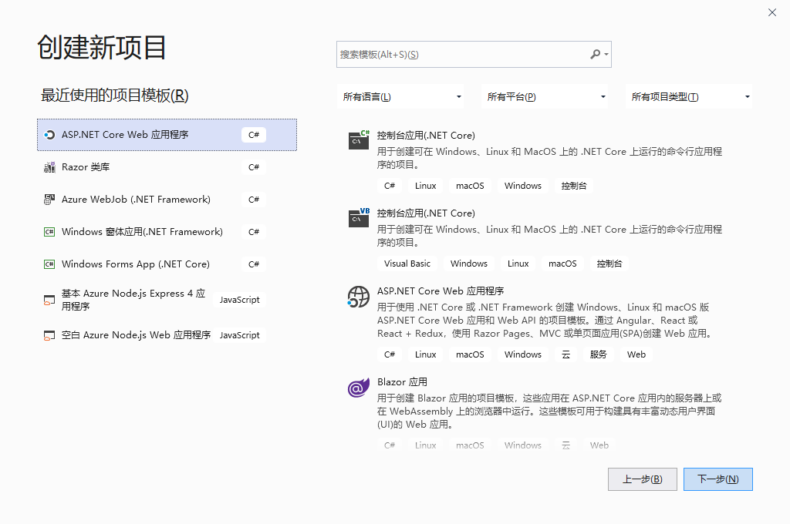
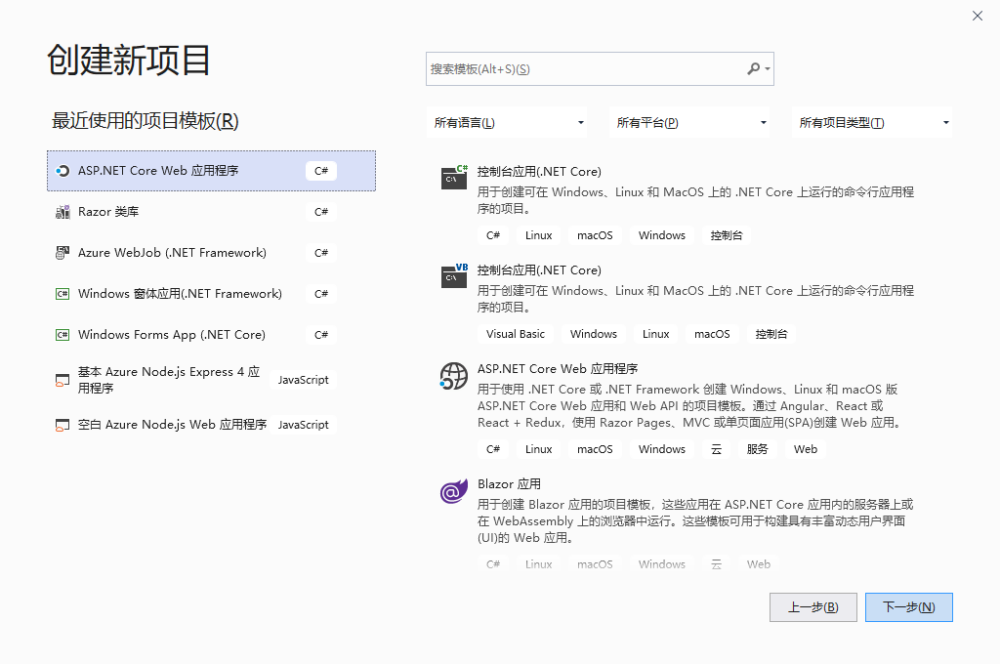
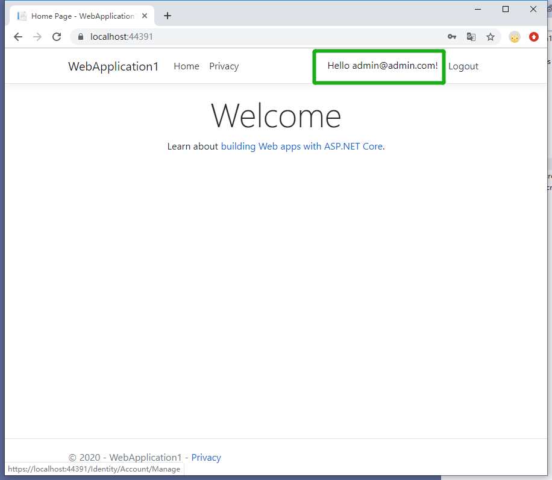
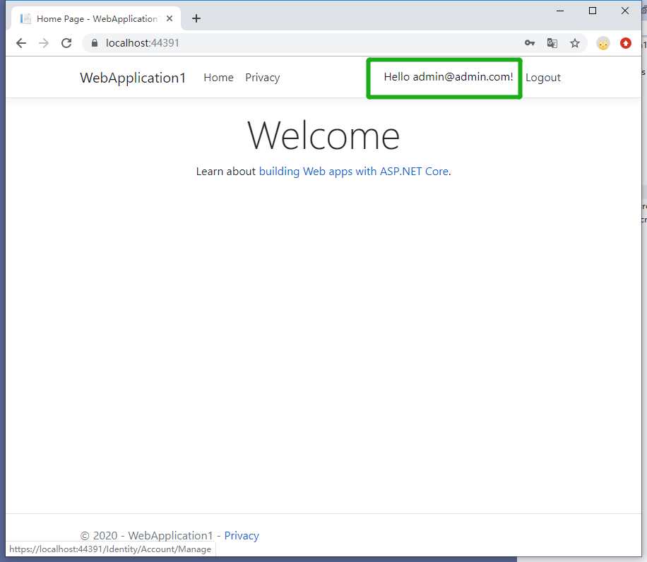
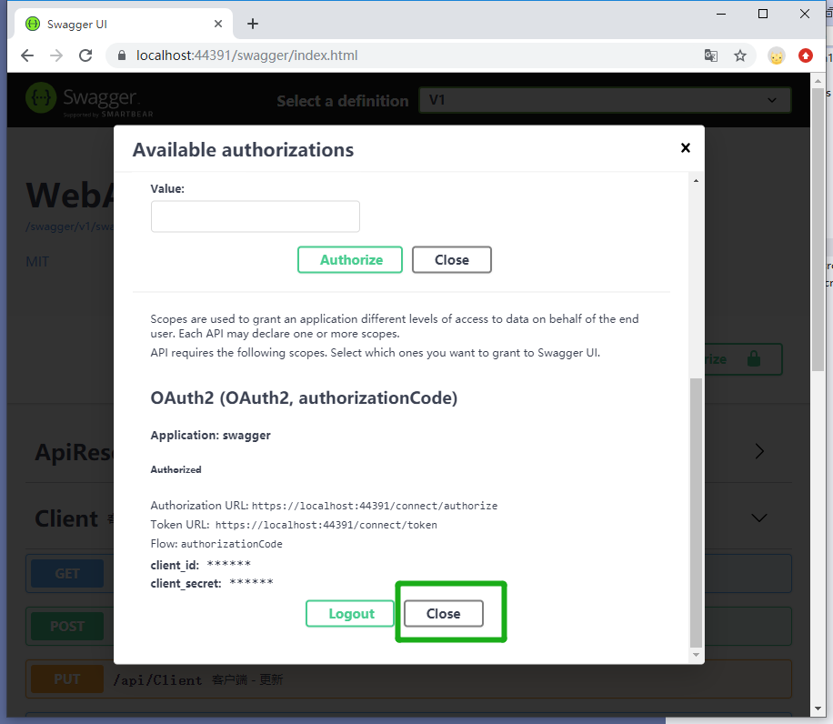
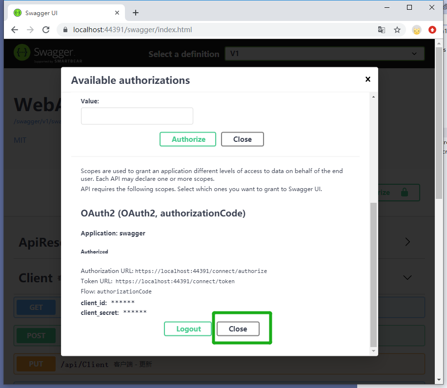

创建标识服务器¶
Note
参考如下步骤，搭建标识服务器。请确保您已经安装了 Visual Studio 2019 和 DotNet Core 3.1，以及 SQL Server 。
 



3，配置¶
appsetting.json¶
- 对 项目 点击右键——属性——调试，复制项目网址
- 复制下面代码到 appsetting.json ，注意将Host节点替换为当前项目网址，结尾不要带“/”
- DataBaseConnection 可替换为实际数据库的地址，SMS 和 Email 为 sendcloud 的服务，可空
"ConnectionStrings": {
"DataBaseConnection": "Data Source=(localdb)\\ProjectsV13;Initial Catalog=ismsdb_demo;Integrated Security=True;Pooling=False",
"AzureStorageConnection": "可空"
},
"IdentityServer": {
"Host": "当前项目网址，结尾不要到/",
"SMS": {
"apiUser": "可空",
"apiKey": "可空"
},
"Email": {
"apiUser": "可空",
"apiKey": "可空",
"fromEmail": "可空",
"fromName": "可空"
}
}


添加并引用服务¶
- 打开 Startup.cs 文件，添加如下代码。( 注释app.UseAuthentication())
services.AddIdentityServer4MicroService();
app.UseIdentityServer4MicroService();

 



 
